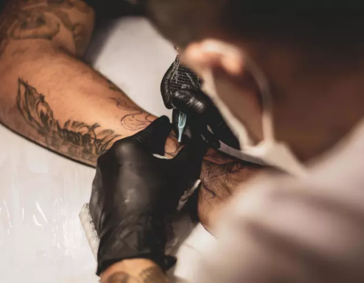
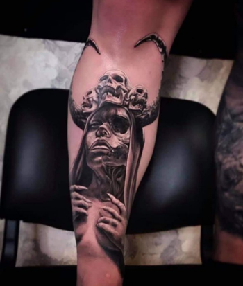

Процес
Насколько болевой процесс
Не будем забывать о том, что все же кожа прокалывается и это не особо приятно.
Сказать что сильно больно - нет, вполне терпимо,
но стоит так же учитывать что у каждого человека
различный болевой порог и восприятие происходящего.
Существует категория людей, для которых и
первый прокол иглой кожи вызывает панику и боль.
Вторая категория наслаждается происходящим процессом
Так же есть люди, которым вполне терпим весь процесс.
Конечно же, весомым фактором играет время - чем дольше
будет длиться процедура, тем сильнее будет ощущаться
боль. Все же красота требует жертв, и с этим не поспоришь.
Немного потерпев - Вы приобретете прекрасную
татуировку, которой будете наслаждаться долгие годы.
Мастера татуировки в Харькове сделают все необходимое,
дабы процесс происходил максимально безболезненно.
В нашем салоне есть всевозможные средства
устраняющие болевые ощущения либо максимально
притупив их, позволяя Вам ощущать полный комфорт.
|
Цены татуНа цены тату влияет множество
|
|
Выбор МастераУзнав цены на тату, многие
|
 |
|
выбираете, оставит на
|
|
|
перед Вами специалист и
|
 |
Масштаб тату
Размер изображения
|